Week 6 Introduction to Google Earth Engine
This is a very exciting week that I could not physically attend since I was at the CUSP Data Dive (Datathon), GEE is something that interested me before selecting this module. This week we are introduced to the basic concepts of GEE and JavaScript.
JavaScript and GEE Basics
Google Earth Engine is a cloud platform developed by Google for scientific data analysis. (Reis, Datia, and Pós-de-Mina Pato 2020) GEE can handle large datasets in a relatively faster than many other traditional commercial software, its mature integration with JavaScript also enables new users to master the tool suite with a shallower learning curve.(Cardille et al. 2022) JavaScript is the language used in GEE code editor, it is an essential tool for front-end development, enabling developers to implement complex and interactive websites. JavaScript also interacts with HTML and CSS to style and build the user interface. I have also summarised some useful introduction materials for learning GEE here in the term summary.
Here is a basic block to code a function:
function sayHi(name) {
alert("Hi," + name + "!");
}
sayHi(" guys, "); // Pops up "Hi, guys, !"GEE Case Study Bristol
First, I gathered air quality data over Bristol. But the resolution from Sentinel 5P was not ideal, thus I zoomed out in order to find places with high NO2 levels, in the end, even London is included. At this resolution, it is obvious that we will need more image processing and better resolution to have fine-grained data on urban air quality

Air Quality, SAVI, ARVI, NDVI and NDWI
In this introductory study of GEE, I have examined the NO2 from Sentinel 5P and calculated NDVI, NDWI, SAVI and ARVI for Bristol. Time from the data used are Sentinel 2 and Sentinel 5P (for NO2) from 2021-Jan-01 to 2023-Dec-30, I made a date slider for the user to drag to select which data from a 30-day window. Rarely, the selection won’t be valid, that is because the filter that I coded for the cloud is very low 5, and the Sentinel 2 images tend to be more cloudy for Bristol, please refresh the webpage and try another month. Most of the time it is working, due to the confined time-frame, I will be optimising this app and its UI in the future. For now, NO2 is not bounded, as the Sentinel 5P data is low-resolution compared to Sentinel 2, thus NDVI, NDWI, SAVI and ARVI are bounded within the Bristol image, where as NO2 layer is not.
Putting Everything Together
Here is the link to the lookup app for Bristol, it is also embedded as follows:
For the legend in this GEE app, I have modified and derived the code from: Open Geo Blog. The colour code gradients for the four metrics are gathered from this website. The boundary for the app is Greater Bristol (or the Global Administrative Unit (GAUL) Layer Level 2 that contains Bristol) which is larger than the shapefile used to clip for the city boundary in the week 6 practical or the following screenshots.
For week 6, the author downloaded the Bristol City Boundary shape file, uploaded to the assets and clipped out images with only Bristol. This is smaller compared to the GAUL level 2 boundary used in the GEE app.
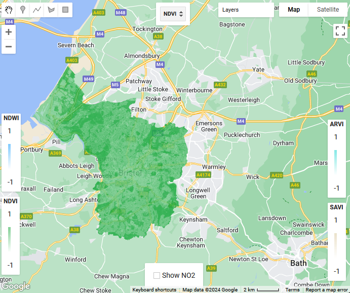
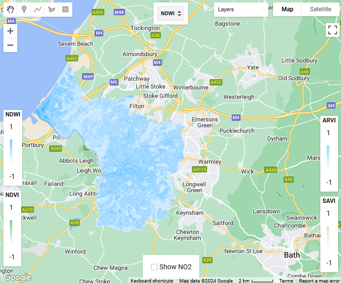
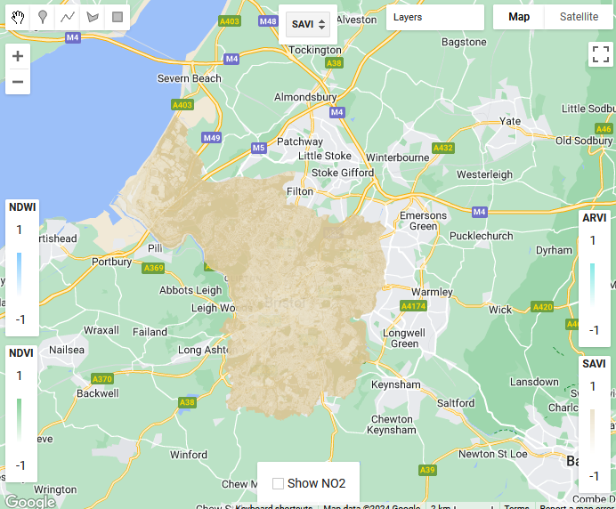
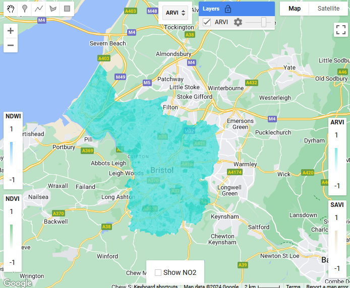
NDVI, NDWI, SAVI and ARVI bounded by the Bristol Boundary
Principle Component Analysis
GEE can run PCA for satellite data, but the browser froze for a few minutes before the results are ready.
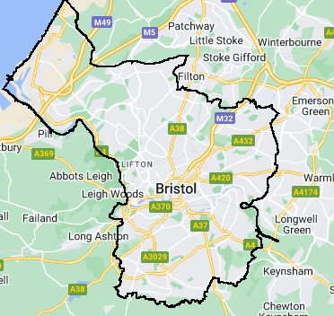
Bristol Boundary
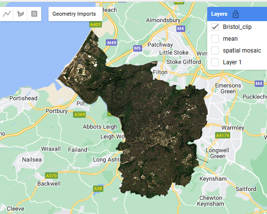
Bristol Clip
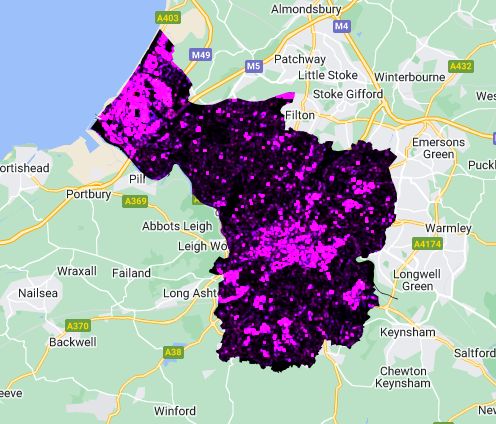
GLCM
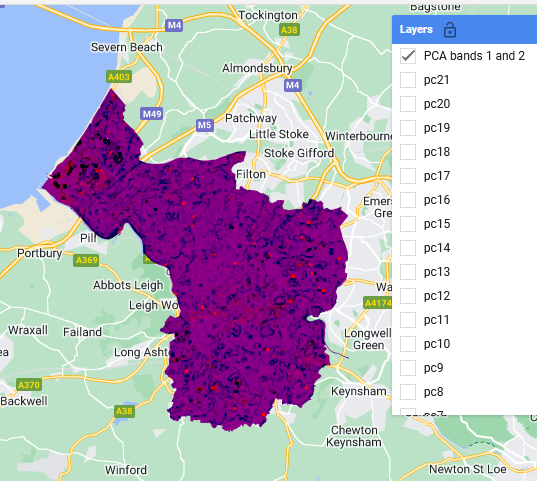
P1 and P2
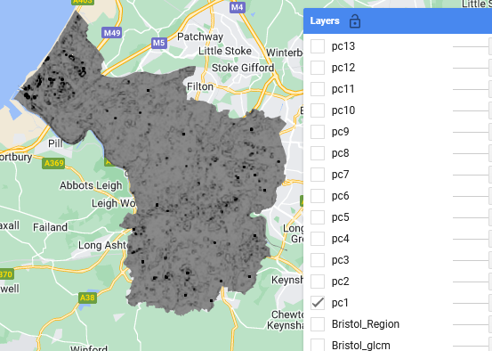
PC1
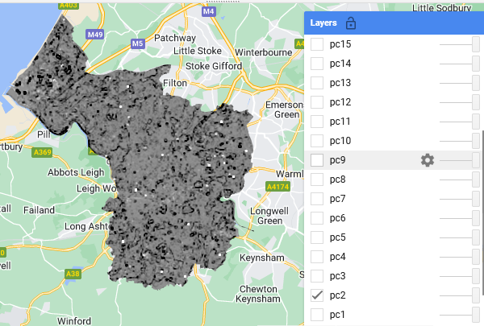
PC2
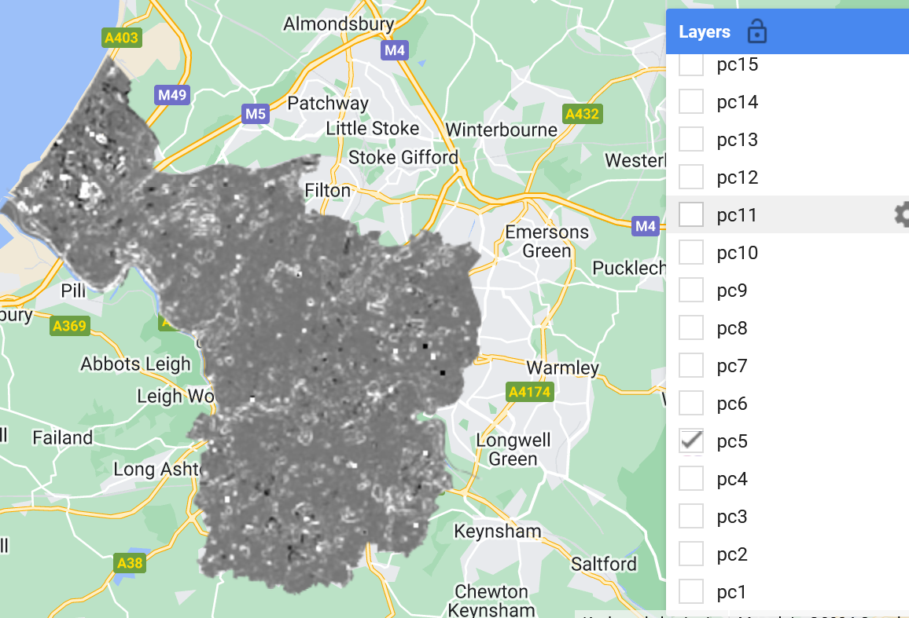
PC5
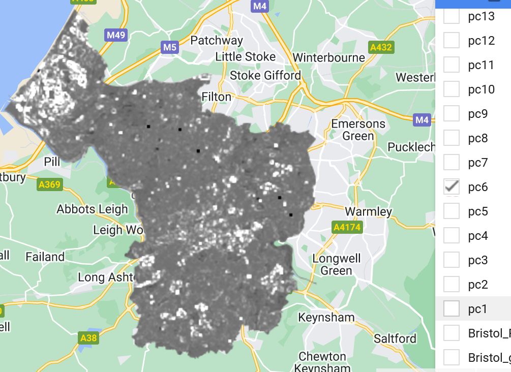
PC6
PC1 explains 77.17% of the variance in the dataset. With my visual assessment of the GLCM and PCA results, it is obvious PC1 and PC2 captures high NDWI and highly building dense areas repectively, whereas GLCM captures high-reflectance areas, it performs well on flat rooftops, making it suitable for identifying buildings.(Christaki et al. 2022) Such results are essential as the input of more complex models, such as classification models with dimensionalities reduced to PC1, PC2 and PC3 (together they explain 95.88% of variances). However, PC4 to PC6, or the other PCs on condition that they are still meaningful and not rounded to 0, can provide crucial insights to anomalies and noises.
| PC | Percentage Variance Explained |
|---|---|
| PC1 | 77.17 |
| PC2 | 11.40 |
| PC3 | 7.31 |
| PC4 | 2.41 |
| PC5 | 1.58 |
| PC6 | 0.11 |
| PC7 | 0.03 |
| PC8 - PC20 | 0.00 |
More on GEE and Literature Review
Google Earth Engine (GEE) offers a wide range of Earth data for researchers to use with easy access, this has led to a surge in publication using GEE. As a ECE major, I first explored the how GEE can support a vast user group scattered around the planet, and then looked into the recent trend in the scientific community with GEE.
GEE Capabilities and Trend in Scientific Research
The system architecture of GEE is well designed to offer services at a large scale. This design allows the GEE to host massive amount of data while being scalable. Of course, being the birth-company for the famous MapReduce, it is obvious that hadnling massive amount of data is what Google does best. GEE offers a seamless integration with machine learning, whether it is using the API from python or code editor, the ML-workflow is well-integrated.
Due to its advantages, more members from the scientific researchcommunity have been adapting GEE into their research in recent years.(Pham-Duc et al. 2023) GEE can provide geo-spatial analysis at a large-scale for free and its ample image series datasets are attractive features that drive a growing usage from the researchers. Furthermore, GEE can meet the needs of urban researcher since the nature or urban science research requires multi-faceted data and spatiotemporal data at large scale. GEE’s abundant city bird-view images in with sufficient temporal richness, encourages urban researcher to utilise it in conjunction with other urban data, sparking novel research findings about our growing metropolitan environment.
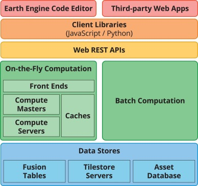
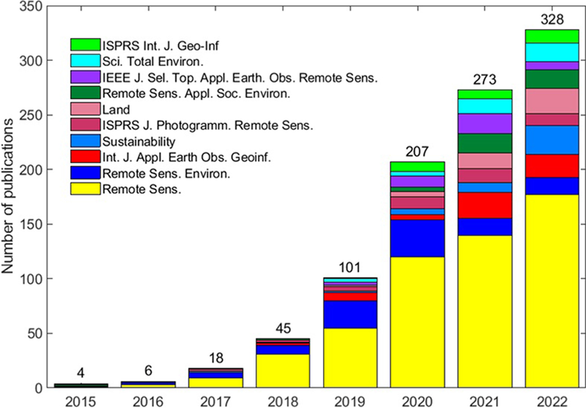
System architecture of GEE (left) (Gorelick et al. 2017) and Annual number of articles published by the top ten journals (Pham-Duc et al. 2023)
GEE Applications with GLCM
In the context of remote sensing for cities, GEE is employed in a diverse range of new applications and publications.(Amani et al. 2020) During the practical, I dived into the GLCM (Grey-Level Co-occurrence Matrix) and its applications in identifying potentials buildings in remote sensing datasets, this enabled me to have a wider range of methodology design for both my future research and the group assessment. There are many unique publications regarding GLCM, in the aspects of the theoretical construct of GLCM methods, Lan et al. Lan and Liu (2018) proposed a method to optimse the multi-scale parameters for the GLCM texture window. On the application side, researchers developed methods that combine the GLCM with SNIC (Simple Non-Iterative Clustering) to process the data for classification input in LULC (Land Use and Land Cover) research. (Tassi and Vizzari 2020) Other researchers have extended the GLCM methods to process multi-layered data and combined the modified GLCM with SVM (Support Vector Machine) to analyse collapsed buildings.(Moya et al. 2019) These new developments highlight the innovative usage and adaptation of GLCM for remote sensing research, however, it also indicates that such numeric methods should be handled with caution as its limitations may hinder the analysis accuracy if proper fine-tuning are not performed.
Reflection
Employing Google Earth Engine (GEE) certainly rekindles memories of my extensive collaborative efforts on diverse projects in Melbourne. During those projects, I relied on Nearmap (which was really high-res!) to coordinate with the design team and worked closely alongside engineers and GIS specialists. Together, we organised design modifications and participated the digital transformation of the construction processes. Unlike those days when my role was more supervisory and collaborative, I now find myself directly engaged with GEE, utilizing its powerful remote sensing capabilities for urban analysis and environmental applications.
Although GEE offers a powerful tool suite for urban research, there may be certain limitations. First, it fosters a level of vendor lock-in where extensive use of GEE can lead to dependence on Google’s infrastructure, terms and conditions, posing risks to the research workflow. Furthermore, GEE is challenging to work with offline. Researchers with poor internet connection or working on remote sites may struggle to gain access to GEE. Data sharing with GEE can be more complicated than other platforms. Sharing custom-made shapefiles might turn out to be a complex process due to GEE’s data management policies and permissions. Finally but not the least, GEE can be difficult for non-coders to learn, what is available to it JavaScript library can be occasionally counter-intuitive.
Despite GEE’s limitations, its versatile and lightweight nature, combined with its openness and collection of data, still weighs out its limitations. Researching with GEE on urban topics is still promising as the platform itself is robust and powerful for large datasets, besides, the GEE community is open and vibrant, there are many resources and people for turn to for collaboration and assistance.